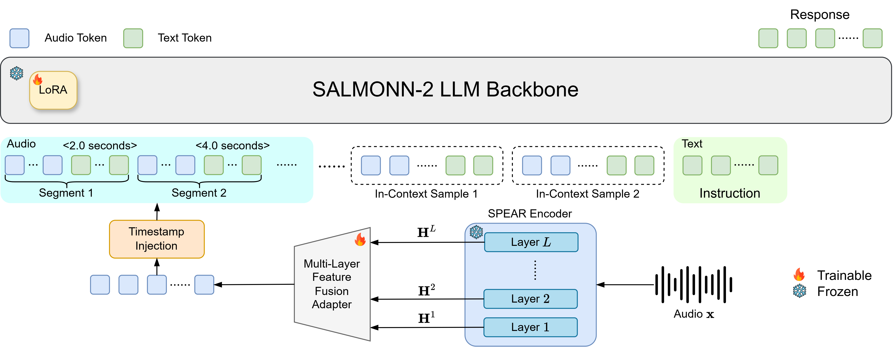

SALMONN-2：用一个自监督编码器撑起通用音频大模型 —— 论文总结¶
原文：SALMONN-2: Advancing General-Purpose Hearing Abilities with Self-Supervised Representations（arXiv:2607.17079v1，eess.AS，2026-07-19，许可 CC BY 4.0，已投 IEEE）
快捷入口：摘要页 ｜ PDF ｜ HTML 全文 ｜ 代码（salmonn2 分支） ｜ HF 权重 SALMONN-2-8B ｜ HF Space Demo ｜ SPEAR 编码器权重
作者：Xiaoyu Yang*、Xuenan Xu*、Wenyi Yu、Siyin Wang、Changli Tang、Terumi Chiba、Siyuan Hou、Ziyang Zhang、Wen Wu、Baoxiang Li、Guangzhi Sun、Chao Zhang†、Philip Woodland（*共同一作，†通讯作者）
机构：剑桥大学（Woodland 组）、上海人工智能实验室、清华大学电子系（张超组）；代码发布在字节跳动的 SALMONN 仓库下
本文依据：我读完了 arXiv v1 HTML 全文（正文 I–VI 节、全部 10 张表和参考文献），并把 salmonn2 分支 的代码拉下来逐文件读了一遍（2026-11-02）。Hugging Face 页面今天从我这边一直连接超时，所以权重的许可证和 30B 版本是否已发布，我没能直接核实，下文会标明。
一、一句话概括¶
SALMONN-2 是一个“只听不说”的音频理解大模型：冻结的自监督编码器 SPEAR（600M，13 层 Zipformer）→ 把 13 层隐状态全部拼起来再压缩的 MLF 适配器 → 每 2 秒插一段文字时间戳 <t seconds> → Qwen3（8B 或 30B-A3B，LoRA 微调）。只用 18.2k 小时指令数据，在 MMAU-Pro / MMAR / MMSU 上拿到同规模开源模型最好成绩（58.5 / 64.5 / 69.5）。另一个卖点是多模态上下文学习（MICL）：给热词同时提供“文字 + 一段发音音频”，做上下文偏置 ASR。作者发现这种能力不会自己冒出来，必须专门构造数据训练。
二、研究背景（§I，§II）¶
作者认为现有音频大模型（ALLM）大多在堆模型规模和指令数据，有三个基础设计没认真研究过：
| 问题 | 现状 | SALMONN-2 的回答 |
|---|---|---|
| 用什么音频编码器 | 主流是有监督编码器（Whisper 系，如 Qwen2-Audio、AF3），表示只覆盖标注任务能教到的信息；初代 SALMONN 用 Whisper + BEATs 双编码器来补非语音信息 | 换成单个通用自监督编码器 SPEAR（ICML 2026，同一作者），同时覆盖语音和一般音频 |
| 编码器怎么接 LLM | 线性层、Q-Former 等，基本只用最后一层；同期的 MOSS-Audio 把多层特征注入 LLM 的多个解码层，改动了 LLM 内部 | MLF 适配器：在进入 LLM 之前把所有层融合，不改 LLM |
| 能不能用上下文 | 文本 LLM 靠 ICL 适应新领域，ALLM 很少研究多模态 ICL；Audio Flamingo 做过 few-shot，MiMo-Audio 研究的是生成侧（如变声） | 在上下文 ASR 上研究 MICL：热词列表里每个词附一段发音音频 |
SSL 编码器的动机来自一个已知现象（ref 31，SUPERB 的大规模评测）：低层偏声学和音素，中间层偏说话人，高层偏语义。只取最后一层会丢掉副语言和声学细节，这也是后面 MLF 要保留全部层的原因。统一 SSL 编码器方面，作者对比了 USAD（只做双教师特征蒸馏）和 SPEAR（教师蒸馏 + masked token 预测）。
三、方法（§III）¶

Figure 2：SPEAR 输出所有层的隐状态 \(\mathbf{H}^1\ldots\mathbf{H}^L\)，MLF 适配器融合后做时间戳注入（每段音频 token 后面跟 <2.0 seconds>、<4.0 seconds>……），再和上下文样本、文本指令一起送进 LoRA 微调的 LLM。雪花表示冻结，火焰表示可训练。（图片取自代码仓库 assets/SALMONN2.png，与论文图 2 相同。）
另见 Figure 1：SALMONN-2 和其他开源 ALLM 的雷达图对比。
3.1 统一 SSL 编码器 SPEAR（§III-B，§IV-C）¶
对输入波形 \(\mathbf{x}\)，编码器输出所有层的隐状态：
具体用的是 SPEAR XLarge：600M 参数，\(L=13\) 层 Zipformer，\(d=1280\)，帧率 50 Hz。从代码看，输入是 16 kHz 音频的 128 维 fbank（100 Hz），经 Conv2dSubsampling 降到 50 Hz；Zipformer 的 7 个 stack 分别是 ½/¾/1/1/1 层（合计 13 层），下采样倍率 ½/4/8/4/2/1，causal=False，也就是非流式、整段看。训练全程冻结。
3.2 多层特征融合（MLF）适配器（§III-C）¶
分四步：
- 每层单独做 LayerNorm，再沿特征维拼接：
$\(\widetilde{\mathbf{H}}^{l}=\mathrm{LayerNorm}(\mathbf{H}^{l}),\qquad \mathbf{H}_{\mathrm{cat}}=[\widetilde{\mathbf{H}}^{1};\widetilde{\mathbf{H}}^{2};\cdots;\widetilde{\mathbf{H}}^{L}]\in\mathbb{R}^{T\times Ld}\)$
这里 \(Ld=13\times1280=16640\)。 - 用一个可学习矩阵压回 \(d\) 维：
$\(\mathbf{Z}=\mathbf{H}_{\mathrm{cat}}\mathbf{W}_{d},\quad \mathbf{W}_{d}\in\mathbb{R}^{Ld\times d}\)$ - 每 \(q\) 帧拼成一帧，降低 token 率：
$\(\mathbf{G}_{m}=[\mathbf{Z}_{(m-1)q+1};\ldots;\mathbf{Z}_{mq}],\quad \mathbf{G}_{m}\in\mathbb{R}^{qd}\)$
取 \(q=5\)，50 Hz 降到 10 Hz。 - 两层 MLP（Linear → ReLU → Linear）投影到 LLM 词向量空间：
$\(\mathbf{A}_{m}=\phi(\mathbf{G}_{m}),\quad \mathbf{A}_{m}\in\mathbb{R}^{d_{\mathrm{LLM}}},\quad M=\lfloor T/q\rfloor\)$
和“可学习加权和”（SUPERB 式，所有层共用一组标量权重）相比，MLF 在投影之前保留了每一层的信息，所以能学到跨层组合，不同任务可以各取所需。参数量见 Table III：8B 版 64M，30B 版 56M。我按代码里的层尺寸算了一遍，两个数都对得上（见第七节）。
3.3 时间戳注入（§III-D）¶
音频 embedding 本身只带相对顺序，没有绝对时间。参照 Qwen3.5-Omni 的做法，每隔 \(k=r\cdot g\) 个音频 token 插入一段普通文本 <t seconds>，直接用 LLM 词表里已有 token 的 embedding，不新增参数：
其中 \(r=10\) Hz，\(g=2\) 秒，所以 \(k=20\)：每 20 个音频 token 后面跟一段 <2.0 seconds>、<4.0 seconds>……。注入后的序列记作 \(\widehat{\mathbf{A}}\)。这样时间标记和 LLM 词表处在同一语义空间，模型输出时间戳时也用同样的写法。
3.4 面向上下文 ASR 的多模态上下文学习（MICL）（§III-E）¶
传统上下文 ASR 只给文字热词。但外国人名、怪拼写、口音、多音词，光看字形很难对上实际读音。作者把它改写成 MICL：给定待识别语音 \(\mathbf{x}\) 和偏置列表 \(\{w_i\}_{i=1}^{N_{\text{biasing}}}\)，构造
其中 \(\mathbf{s}_{w_i}\) 是词 \(w_i\) 的一段参考发音音频，同样经过 SPEAR + MLF 编码。按论文的说法，参考发音不插时间戳（第八节会说到代码里的实际情况和这一点有出入）。训练时混合纯文本偏置和多模态偏置两种样本，并加入干扰词和目标词随机丢弃，防止过度偏置。
3.5 训练目标（§III-F）¶
所有任务统一为条件生成。条件 \(\mathcal{P}\) 包括指令、\(\widehat{\mathbf{A}}\) 和可选上下文 \(\mathcal{C}\)，目标文本 \(\mathbf{y}=(y_1,\ldots,y_N)\)：
没有任何辅助损失，SED 和反欺骗的输出也只是结构化 JSON 文本。
四、训练（§IV）¶
4.1 数据（§IV-A，Table I）¶
共 8.9M 条、18,183 小时：
| 类别 | 任务 / 数据集（小时） |
|---|---|
| 语音与副语言 | ASR：LibriSpeech 960、GigaSpeech 1000、CommonVoice 1740；情感 ER：IEMOCAP S1–4 5.2、MSP-Podcast 195；说话人验证 SV：VoxCeleb1 1200；重叠语音识别 OSR：LibriMix 260 |
| 一般音频与音乐 | 音频描述 AAC：WavCaps 760、AudioCaps 134、Clotho 25、AudioSet 5000；音乐：MusicCaps 7、MillionSong 400、MusicNet 3 |
| 专项任务与 QA | 上下文 ASR：GigaSpeech 220、SPGISpeech 196；语音质量评估 SQA：QualiSpeech 136；声音事件检测 SED：AudioSet-strong 329、FineLAP 277、PicoAudio2 172；反欺骗：HoliAntiSpoof 1130；通用 QA：内部数据 4034 |
SED 数据做成两种形式：QA（某个声音事件有没有出现）和摘要（列出每个事件及其时间段）。SED 和反欺骗的回答统一成 JSON。内部 QA 数据占总时长的 22%，没有公开。
4.2 两阶段训练（§IV-B，Table II）¶
| 阶段 | 数据 | 步数 | batch | 学习率 |
|---|---|---|---|---|
| Stage 1：对齐 | 主要用 ASR + AAC 做表示对齐，加 SED 数据引入时间定位 | 40k | 192 | 2e-4 |
| Stage 2：扩展 | 加入其余任务的指令数据和音频 QA，提升指令跟随和推理 | 50k | 192 | 2e-4 |
两个阶段都是：SPEAR 冻结、MLF 全量训练、LLM 用 LoRA。
4.3 模型配置（§IV-C，Table III）¶
| LLM | 参数量 | 词向量维度 | LoRA rank | MLF 参数 |
|---|---|---|---|---|
| Qwen3-8B | 8B | 4096 | 64 | 64M |
| Qwen3-30B-A3B-Instruct-2507 | 30B（激活 3B） | 2048 | 64 | 56M |
论文没写 LoRA 挂在哪些模块上。仓库里的微调配置是 q_proj、v_proj，r=64、alpha=32、dropout 0.05。
4.4 MICL 训练数据怎么造（§IV-D）¶
这部分细节对复现热词功能很有用：
- 哪些算上下文词：在 GigaSpeech / SPGISpeech 训练文本中，词频排在 2 万名以外的词。约 30% 的样本含至少一个上下文词，这些样本平均每条 2.2 个。
- 发音音频：每个上下文词用 OmniVoice TTS 合成 3 条发音，说话人从 200 个 TTS 生成的说话人池里抽，训练时每个词随机选 1 条。
- 偏置列表：全部真实上下文词 + 25–50 个随机干扰词；不含上下文词的样本，列表全是干扰词。
- 抗过度偏置：每个真实上下文词以 0.1 的概率从列表里删掉；整条样本以 0.2 的概率去掉发音音频，退化成纯文本偏置样本。
- 测试集：仿照 LibriSpeech biasing benchmark 的做法，在 GigaSpeech test 上构造，列表长度补到 20 / 50 / 100。37% 的样本含偏置词，平均每条 1.5 个。测试发音换了另一个 TTS 说话人池。指标除 WER 外还有 B-WER（只算偏置词）和 U-WER（只算非偏置词）。
4.5 消融实验的训练设定（§V-E1）¶
消融只用数据子集：去掉 SPGISpeech、MSP-Podcast 和 Table I 的整个“专项任务与 QA”部分，统一训练 30k 步。双编码器基线沿用 SALMONN 的做法，两个编码器的特征沿特征维拼接后再投影。
五、推理¶
论文正文没有单独的推理章节，下面结合论文和代码整理。
5.1 推理流程¶
- 音频重采样到 16 kHz，转单声道，用 lhotse 算 128 维 fbank（100 Hz）。
- SPEAR 输出 13 层隐状态（50 Hz）→ 逐层 LayerNorm → 拼接 →
Linear(16640→1280)→ LayerNorm → 每 5 帧拼接 → MLP → 10 Hz 音频 token。 - 每 20 个音频 token 后插入
<t seconds>文本 token 的 embedding。 - 音频占位符
<audio>在模板里被替换成 Qwen 词表现成的<|vision_start|><|vision_end|>，音频 embedding 被拼接在vision_start之后。 - Qwen3 自回归解码。仓库示例用贪心解码（
do_sample=False），CLI 会从输出里去掉 Qwen3 的<think>/</think>标签。
5.2 Prompt 格式¶
普通任务：<audio>Please describe the audio.（不写 <audio> 时，处理器会把所有音频放在 prompt 最前面）。
MICL 上下文 ASR（仓库 examples/micl_manifest.json）：
{
"audios": ["assets/micl/main_utterance.wav", "assets/micl/howes.wav", "assets/micl/wszelaki.wav"],
"prompt": "<audio>Recognize the speech and give me the transcription.\nUse the following contextual words and their pronunciations as references while transcribing the speech:\n<biasing_list>\n<audio>howes\n<audio>wszelaki\n</biasing_list>."
}
音频按从左到右的顺序和占位符一一对应。顺序是：先主音频，再指令，再“发音 + 文字”对。
5.3 上下文开销与硬件¶
- token 率：音频 10 token/s，另外每 2 秒多一段时间戳文本（几个 token）。1 分钟音频大约是 600 个音频 token 加 30 段时间戳。比 Whisper 系常见的 25 Hz 低不少。
- 时长上限：代码只预先 tokenize 了
<0.0 seconds>到<120.0 seconds>共 1201 个时间戳，超过 120 秒后时间戳会一直停在<120.0 seconds>。论文没写最大音频长度，长音频的时间定位要注意这一点。 - 显存（按参数量估算）：8B 版 bf16 权重约 \(8.2\text{B}\times2 + 0.6\text{B}\times2\approx 17.6\) GB，A800 很宽裕，12 GB 卡需要把 LLM 量化到 8 bit 或 4 bit。30B-A3B 版 bf16 权重约 61 GB，只能放 A800 80G。
- 非流式：SPEAR 的
causal=False、chunk_size=-1，要拿到整段音频才能编码，不能直接用作流式 / 全双工的前端。
六、实验结果（§V）¶
6.1 经典任务（Table V）¶
| 模型 | LLM | LS clean/other↓ | Giga↓ | AudioCaps↑ | Clotho↑ | MusicCaps↑ | IEMOCAP↑ | CoVoST2↑ | LibriMix↓ | VoxCeleb1↑ |
|---|---|---|---|---|---|---|---|---|---|---|
| SALMONN | 7B | 2.¼.9 | 10.0 | 57.6 | 44.7 | 5.5/21.8 | 69.0 | 33.1 | 23.0 | 94.0 |
| Qwen2.5-Omni | 8B | 1.8/3.4 | 23.0 | 64.4 | 50.2 | 5.5/22.5 | 63.5 | 41.4 | 55.3 | 62.9 |
| Kimi-Audio | 8B | 1.4/2.6 | 9.1 | 52.0 | 50.7 | 0.0/9.0 | 76.2 | 0.3* | 44.4 | 61.9 |
| MiMo-Audio | 8B | 3.⅚.4 | 14.1 | 53.6 | 44.2 | 0.8/15.9 | 61.2 | 35.8 | 57.7 | 50.0 |
| AF-3 | 8B | 1.6/3.1 | 9.3 | 64.0 | 54.4 | 4.0/19.1 | 63.8 | 11.9* | 52.5 | 50.0 |
| AF-Next | 9B | 1.5/2.8 | 9.2 | 61.1 | 54.9 | 3.1/19.2 | 55.0 | 1.7* | 67.6 | 50.0 |
| MOSS-Audio | 9B | 2.⅖.6 | 8.6 | 47.4 | 44.2 | 3.7/19.6 | 62.7 | 23.9 | 45.9 | 61.0 |
| SALMONN-2 | 9B | 1.7/3.0 | 9.0 | 65.0 | 53.4 | 5.9/22.0 | 71.0 | 46.6 | 8.8 | 93.8 |
| SALMONN-2 | 30B-A3B | 1.6/3.0 | 8.9 | 65.2 | 53.6 | 5.6/23.5 | 74.0 | 46.4 | 9.0 | 94.1 |
AudioCaps / Clotho 用的是 SBERT 相似度，MusicCaps 是 BLEU4/ROUGE-L，CoVoST2 是英译中 BLEU4。* 表示模型没按指令做翻译，输出了转写。几个观察：
- 能力分布均衡：别的模型常有明显短板，比如 Kimi-Audio 的 LibriSpeech 最好但音乐描述很差；Qwen2.5-Omni、MiMo-Audio 在 GigaSpeech 上 WER 飙升。作者说 MiMo 会把英文转写成中文，Qwen2.5-Omni 有时拒绝转写。
- OSR 和 SV 这类训练里少见的任务，大多数 ALLM 基本做不了。SALMONN-2 的 LibriMix cpWER 是 8.8，初代 SALMONN 是 23.0。
- 30B 在经典任务上几乎没有提升。作者的解释是这些任务主要依赖感知，不太需要 LLM 的推理能力。
6.2 通用音频理解基准（Table VI）¶
| 模型 | LLM | 有监督数据（h） | MMAU-Pro | MMAR | MMSU |
|---|---|---|---|---|---|
| Qwen2.5-Omni | 8B | – | 52.2 | 56.7 | 61.3 |
| Kimi-Audio | 8B | >13M | 56.6 | 60.8 | 54.7 |
| MiMo-Audio | 8B | >1M | 53.4 | 61.7 | 61.9 |
| AF-3 | 8B | >55k | 51.7 | 58.5 | 61.4 |
| AF-Next | 9B | >500k | 56.3 | 59.7 | 59.4 |
| MOSS-Audio | 9B | >1M | 57.5 | 64.4 | 66.4 |
| SALMONN-2 | 9B | 18.2k | 58.5 | 64.5 | 69.5 |
| SALMONN-2 | 30B-A3B | 18.2k | 60.3 | 67.6 | 72.0 |
和最强基线 MOSS-Audio 比，三项分别 +1.0 / +0.1 / +3.1，MMSU 的提升最明显（这个基准偏语音语义和副语言）。换成 30B 后三项平均 +2.5，说明这些基准更依赖 LLM 的推理能力。“数据量”一列作者也承认口径不统一，只能大致参考。
6.3 MICL 上下文 ASR（Table VII）¶
每格是 WER / B-WER / U-WER（%），GigaSpeech：
| 模型 | MICL 训练 | 偏置方式 | 无偏置 | 列表长 20 | 列表长 50 | 列表长 100 |
|---|---|---|---|---|---|---|
| AF-3 | ✗ | 文本 | 9.3/15.8/9.3 | 18.0/19.0/17.9 | 17.9/19.7/17.7 | 19.8/21.0/19.7 |
| MOSS-Audio | ✗ | 文本 | 8.6/15.2/8.4 | 8.7/9.⅛.6 | 8.9/9.6/8.8 | 9.3/10.2/9.3 |
| MOSS-Audio | ✗ | MICL | 同上 | 26.5/26.0/26.6 | 53.9/31.8/54.6 | 65.5/36.9/66.4 |
| SALMONN-2 | ✗ | 文本 | 9.1/15.5/9.0 | 9.1/12.2/9.0 | 9.2/14.1/9.0 | 9.2/15.6/8.8 |
| SALMONN-2 | ✗ | MICL | 同上 | 25.7/26.0/25.5 | 47.7/29.7/50.2 | 57.3/33.5/58.1 |
| SALMONN-2 | ✓ | 文本 | 9.0/15.4/8.9 | 8.3/7.⅝.3 | 8.5/7.9/8.4 | 8.⅞.8/8.6 |
| SALMONN-2 | ✓ | MICL | 同上 | 8.2/6.8/8.3 | 8.4/7.2/8.4 | 8.⅝.0/8.5 |
结论：
- MICL 不会自己冒出来：没经过 MICL 训练的模型（包括 SALMONN-2 自己的对照版本），一旦在上下文里塞进多段发音音频，WER 就崩到 25–65%，而且 U-WER 也跟着崩，说明模型被多段音频搞乱了，不只是热词没认出来。
- 经过 MICL 训练后，偏置词错误率 B-WER 从 15.4 降到 6.8（列表长 20），降幅超过一半，U-WER 基本不变。
- 相比纯文本偏置，加了发音音频的 B-WER 再降 0.7–0.8 个点，列表变长时也更稳。
6.4 扩展音频分析任务（Table VIII）¶
| 模型 | DESED SED（mIoU） | 反欺骗 PartialEdit（mIoU） | QualiSpeech（PCC） |
|---|---|---|---|
| SpotSound-Q（专用） | 61.1 | – | – |
| HoliAntiSpoof（专用） | – | 71.58 | – |
| QualiSpeech 微调的 SALMONN（专用） | – | – | 0.660 |
| SALMONN-2 | 70.15 | 73.65 | 0.661 |
| MiMo-Audio | 27.65 | 14.27 | 0.358 |
| MOSS-Audio | 48.14 | 19.14 | 0.402 |
作为通用模型，SALMONN-2 追平或超过了各项专用模型。这里的专用基线（HoliAntiSpoof、QualiSpeech）和 SALMONN-2 作者团队有重叠，用的也是相同的训练集，所以这更像是“把自家专用模型并进通用模型后性能没掉”，不是和外部模型的公平比较。
6.5 消融：编码器与融合方式（Table IX）¶
| 编码器配置 | AudioCaps↑ | MusicCaps↑ | LS ASR↓ | Giga↓ | CoVoST2↑ | LS PR↓ | LibriMix↓ | IEMOCAP↑ | VoxCeleb1↑ |
|---|---|---|---|---|---|---|---|---|---|
| Whisper + BEATs（双编码器） | 68.3 | 5.9/22.7 | 2.¼.9 | 9.6 | 43.4 | 3.1 | 14.8 | 69.1 | 93.2 |
| WavLM + Dasheng（双编码器） | 59.5 | 4.9/21.8 | 2.¾.3 | 11.2 | 39.5 | 3.5 | 43.2 | 56.3 | 81.0 |
| Qwen2.5-Omni 编码器 | 63.6 | 5.4/21.8 | 2.6/6.2 | 11.7 | 39.5 | 9.0 | 47.2 | 63.1 | 88.6 |
| AF-Whisper | 67.2 | 10.2/28.8 | 2.0/4.2 | 12.5 | 44.8 | 3.4 | 25.8 | 73.0 | 86.9 |
| SPEAR 最后一层 | 65.6 | 5.5/22.4 | 1.7/3.3 | 9.6 | 45.9 | 2.9 | 10.0 | 69.8 | 91.9 |
| SPEAR 加权和 | 65.7 | 5.6/22.6 | 1.8/3.3 | 9.8 | 45.8 | 2.8 | 12.0 | 69.9 | 93.2 |
| SPEAR + MLF | 68.1 | 5.8/22.6 | 1.6/3.2 | 9.6 | 45.9 | 2.7 | 9.7 | 70.5 | 94.7 |
- 单个 SPEAR 和 Whisper + BEATs 双编码器大体持平，ASR、音素识别（PR）、OSR 更好，AudioCaps 和 MusicCaps 略差。
- 有监督单编码器的能力分布更偏科：AF-Whisper 的音乐和情感最强，但 GigaSpeech、OSR、SV 明显偏弱。
- 加权和只带来部分提升，LibriMix 反而变差（10.0 → 12.0）；MLF 在大多数任务上最好。作者的解释是加权和对所有任务只学一组层权重。
6.6 消融：时间戳注入（Table X）¶
| 模型 | SED | MMAU-Pro | MMAR | MMSU |
|---|---|---|---|---|
| SALMONN-2 | 70.15 | 58.5 | 64.5 | 69.5 |
| 去掉时间戳 | 68.74 | 58.2 | 64.3 | 69.3 |
SED 提升 1.4 个点；三个通用基准只差 0.2–0.3，基本在噪声范围内。
七、关键代码（salmonn2 分支）¶
仓库很精简，核心模型文件 salmonn/modeling_salmonn.py 只有 223 行，加上 salmonn/spear/（从 icefall 改来的 Zipformer）、训练用的 dataset/collator 和 3 个脚本。README 的注释里写明不包含数据集、数据生成流水线、评测脚本和打分代码。
7.1 MLF 适配器 + 连接器（modeling_salmonn.py）¶
# __init__
encoder_dim = self.audio_encoder.encoder_dim # 1280
self.ln_audio = nn.LayerNorm(encoder_dim)
if config.concatenate_encoder_layers: # MLF 开关
self.concat_proj = nn.Linear(self.audio_encoder.num_encoder_layers * encoder_dim, encoder_dim) # 16640 -> 1280
self.connector = nn.Sequential(
nn.Linear(encoder_dim * config.connector_segment_size, config.connector_hidden_size), # 6400 -> 4096
nn.ReLU(),
nn.Linear(config.connector_hidden_size, qwen_config.hidden_size), # 4096 -> d_LLM
)
# encode_audio
encoded, lengths, middle = self.audio_encoder.forward_encoder(features, feature_lengths) # middle: 13 层隐状态
if self.concat_proj is not None:
middle = [F.layer_norm(x.permute(1, 0, 2), (x.shape[-1],)) for x in middle] # 式(2)，无仿射参数
encoded = self.concat_proj(torch.cat(middle, dim=-1)) # 式(3)(4)
encoded = self.ln_audio(encoded) # 论文没提的额外 LayerNorm
segment = self.config.connector_segment_size # q = 5
encoded = F.pad(encoded, (0, 0, 0, (-encoded.size(1)) % segment))
encoded = self.connector(encoded.reshape(encoded.size(0), -1, encoded.size(2) * segment)) # 式(5)(6)
参数量核对：\(16640\times1280+1280\approx21.30\)M，\(6400\times4096+4096\approx26.22\)M，\(4096\times4096+4096\approx16.78\)M，合计 64.3M，和 Table III 的 64M 一致。30B 版最后一层换成 \(4096\times2048+2048\approx8.39\)M，合计 55.9M，和 56M 一致。这说明 30B 版 MLP 的中间维度仍是 4096，不是论文说的“投影到 LLM 词向量维度（2048）”。
7.2 时间戳注入¶
def register_nl_timestamp_tokenizer(self, tokenizer):
# 预先把 <0.0 seconds> ... <120.0 seconds> 全部 tokenize
self.nl_timestamp_token_ids_list = [
tokenizer(f"<{i * 0.1:.1f} seconds>", add_special_tokens=False)["input_ids"] for i in range(1201)]
def inject_nl_timestamps(self, audio_embeds, audio_lengths):
k = round(self.config.temporal_granularity * self.output_frame_rate) # 2.0 s * 10 Hz = 20
...
for index in range(blocks):
timestamp = (index + 1) * self.config.temporal_granularity # 2.0, 4.0, ...
token_index = max(0, min(round(timestamp / 0.1), 1200)) # 超过 120 s 后封顶
value = embeddings(token_ids) # 直接用 LLM 词表 embedding
# 每块 [k 个音频 token] 后面接 [时间戳 token]
pieces.append(torch.cat((block, stamp), dim=1))
return torch.cat(pieces, dim=1), audio_lengths + cumulative[valid_blocks - 1]
7.3 把音频拼进文本序列¶
# collator：<audio> 替换为 Qwen 已有的视觉占位 token
text.replace("<audio>", "<|vision_start|><|vision_end|>")
# prepare_multimodal_inputs：在每个 vision_start 后面插入对应音频的 embedding
starts = (input_ids[row] == vision_start_id).nonzero(as_tuple=True)[0].tolist()
for position in starts:
pieces.append(token_embeds[row, previous : position + 1])
pieces.append(audio_embeds[cursor, :length]) # 音频位置的 label 填 -100
训练时 prompt 部分的 label 也全部置为 -100，只对 assistant 回复计算损失，对应式 (9)。
7.4 微调¶
scripts/train.py 从已发布的权重出发，给 Qwen3 加一个新的 LoRA（configs/finetune.json：q_proj/v_proj、r=64、alpha=32），SPEAR 冻结，ln_audio + concat_proj + connector 默认可训练（freeze_connector: true 时只训 LoRA）。底层用 HF Trainer，可选 DeepSpeed ZeRO-2。默认超参是 lr 2e-4、weight decay 0.1、warmup 400、40k 步、每卡 4 × 梯度累积 8。
7.5 读代码时发现的问题（静态阅读，没有跑模型）¶
我把 inject_nl_timestamps 的索引逻辑用纯 Python 单独复刻了一遍（没有 import 仓库代码），确认了下面这个现象：当音频 token 数不是 \(k=20\) 的整数倍时，最后一个不完整块的时间戳会被截掉，换进来的是同等数量的 padding 帧 embedding。例如 47 个音频 token：输出里只有 <2.0 seconds>、<4.0 seconds>，结尾是 2 个 padding 帧，而不是 <6.0 seconds>。短于 2 秒的音频（比如 MICL 的发音片段）一个时间戳都没有，尾部却带了几个 padding 帧。原因是返回的长度 audio_lengths + cumulative[...] 是在拼好的序列上从头截取，而最后一块的时间戳排在 padding 帧后面。如果原始训练也用的这份代码，训练和推理行为一致，影响应该不大，但这和论文式 (7) 的描述不完全一致。
八、是否开源¶
| 项目 | 状态 | 依据 |
|---|---|---|
| 推理代码 | ✅ 开源 | salmonn2 分支：infer.py、infer_batch.py，HF trust_remote_code 加载 |
| 微调代码 | ✅ 开源 | train.py + LoRA 配置 + DeepSpeed ZeRO-2 配置 |
| 8B 权重 | ✅ 已发布 | marcoyang/SALMONN-2-8B（权重里已包含 SPEAR） |
| 30B-A3B 权重 | ❓ 未确认 | README 只给了 8B 链接；搜索结果里有一个 tsinghua-ee/salmonn-2 合集，HF 连接超时，没能打开看 |
| SPEAR 编码器 | ✅ 单独发布 | marcoyang/spear-xlarge-speech-audio-v2 |
| 训练数据流水线、MICL 数据构造脚本、评测与打分代码 | ❌ 不在仓库里 | README 注释明确排除；MICL 只给了 1 个示例 manifest 和 3 段 wav |
| 内部 QA 数据（4034 h） | ❌ 未公开 | Table I 标注为 in-house |
| Demo | ✅ | HF Space |
所以能复现推理和在自己的数据上微调，不能完整复现论文的训练：缺 22% 的内部 QA 数据，也缺数据构造和评测代码。
九、商业是否可用¶
我不是律师，以下只是整理出的事实，供你自己判断；正式商用前请让法务核实各项许可证原文。
- 代码：仓库
LICENSE是 Apache-2.0（我读了文件确认），SPEAR 的 Zipformer 源码头部也是 Apache-2.0（源自小米 icefall）。代码本身允许商用。 - LLM 底座：Qwen3-8B 和 Qwen3-30B-A3B-Instruct-2507 按我的了解是 Apache-2.0。
- SALMONN-2 权重和 SPEAR 权重：HF 模型卡上写的许可证我今天没能打开核实。需要你自己看 模型页 右侧的 License 字段。有个第三方中文站（AI铺子）说“可以商用，遵守仓库 LICENSE”，但它只是转述，不能当依据。
- 训练数据带来的风险（这是最需要注意的部分）：权重是在一批许可证各不相同的数据上训出来的。按我的了解，其中好几个数据集本身仅限非商业或学术研究使用，或需要单独签协议，比如 WavCaps、IEMOCAP、MSP-Podcast、SPGISpeech、GigaSpeech（需签使用协议），而 AudioSet、VoxCeleb、MusicCaps 来自 YouTube 片段。各数据集的具体条款我没有逐一核对。“用受限数据训练出的权重能不能商用”在法律上还没有定论，大公司通常会让法务单独评估。
- 实际建议：
- 先确认 HF 权重本身的许可证。
- 如果是 Apache-2.0 / MIT 这类宽松许可，内部研究和原型不用担心；对外商业发布前，让法务评估训练数据的问题。
- 风险最低的做法是只用代码，在自己有权使用的数据上重新训 MLF 和 LoRA（SPEAR 权重的许可证同样要先确认）。
十、与我们对话交互研究的关联¶
- 它不是对话模型，但可以当“耳朵”。SALMONN-2 只做音频到文本的理解，不生成语音，SPEAR 也是非流式的（
causal=False）。它不能直接替代 SALMONN-omni 或 Moshi 式全双工模型里的流式编码器。可借鉴的是设计结论：一个 SSL 编码器 + 全层融合，就能同时拿到语义、说话人、情绪和环境声。全双工模型需要感知用户情绪、背景音或第二说话人时，这条路线比“Whisper + BEATs 双编码器”更省事。同组的 ELLSA 2 等后续工作是否会换成 SPEAR 前端，值得关注。 - 上下文开销（你之前关心的上下文膨胀问题）：10 Hz 的音频 token 率加上每 2 秒一段时间戳，1 分钟音频约 600 多个 token，比常见的 25 Hz 方案少约 60%。全双工模型要把多轮历史音频留在上下文里时，“每 5 帧拼成 1 帧再 MLP 投影”是一个简单有效的压缩手段，消融显示语音任务基本不掉点。可以和 横向对比笔记 里各模型的 token 率放在一起比较。
- MICL 对对话很实用：对话中的人名、产品名、专有名词，可以“文字 + 发音音频”的形式放进上下文，相当于在对话里实时注入用户的个性化词表。但这篇论文说明了两点：（a）这种能力必须专门训练，否则多段音频反而把识别搞崩；（b）训练时要加干扰词、目标词随机丢弃、去掉音频退化成纯文本这些手段，防止过度偏置。如果我们在全双工模型里做“工具调用返回的实体回填”或“通讯录热词”，这套数据构造方法可以直接拿来用。
- 文字时间戳：不新增参数，直接用
<t seconds>文本 token 做时间定位，SED 提升了 1.4 mIoU。对话场景里，如果要让模型知道“用户 3 秒前开始说话”“这段笑声在哪里”，或者给数字人驱动层提供时间对齐，这是最省事的做法。要注意代码里时间戳封顶在 120 秒。 - 副语言能力和数字人的关系：情感识别 IEMOCAP 71–74%、语音质量评估、说话人验证都可以作为对话系统的感知信号，比如用户情绪可以输入到 Audio2Face 表情层，决定回应时的表情风格。
十一、论文中的不一致与可疑之处¶
- “9B”的口径：Table V / VI 的 “LLM Size” 列写 SALMONN-2 是 9B，但 Table III 写的 LLM 是 Qwen3-8B，HF 仓库名也是 SALMONN-2-8B。9B 应该是 LLM + SPEAR（0.6B）+ MLF 的总参数量，却放在了 “LLM Size” 列下。和别的模型比时口径不统一（比如 AF-3 标的是 8B）。
- “优于多编码器”说法偏强：贡献列表说 SPEAR + MLF “outperforming multi-encoder designs”，但消融正文用的是 “comparable”。Table IX 里 Whisper + BEATs 在 AudioCaps（68.3 vs 68.1）和 MusicCaps 上仍然更好，AF-Whisper 的情感识别（73.0 vs 70.5）也更好。
- 排名表述：正文说 9B 版 IEMOCAP “second-highest”、MusicCaps ROUGE-L “second-best”，但表格里排第二（下划线）的是自家 30B 版，9B 实际排第三；只有排除 30B 时这个说法才成立。
- 时间戳消融的提升被夸大：通用基准只差 0.2–0.3 个点，没有方差或多次运行，正文却说 “consistently improves”。MMAR 比 MOSS-Audio 只高 0.1，也被列为 “best”。
- 论文与代码不一致：参考发音的时间戳。论文说参考发音音频不插时间戳，代码的
encode_audio却对 batch 里所有音频统一调用inject_nl_timestamps。2 秒以内的片段刚好因为第 7.5 节的截断问题没有时间戳，但尾部多了几个 padding 帧；超过 2 秒的发音会被插入时间戳。 - 论文与代码不一致：最后一块的时间戳被截掉（见 7.5）。
- MLP 中间维度：论文说第一层线性“投影到 LLM 词向量维度”，代码里用的是
connector_hidden_size（4096）。30B 版的 56M 参数只有在中间维度 4096 时才算得出来，说明 30B 版并没有投影到 2048。另外，concat_proj之后还有一个ln_audioLayerNorm，公式里没写。 - 输入顺序三处说法不一：§III-E 说输入是“指令、上下文 \(\mathcal{C}\)、查询音频 \(\mathbf{x}\)”；图 2 画的是“音频 → 上下文样本 → 指令”；代码示例是“主音频 → 指令 → 发音 + 文字列表”。式 (8) 写的是“发音在前、文字在后”，示例 prompt 也是这个顺序。
- 符号冲突：\(L\) 既表示编码器层数（13），又在 Table VII 里表示偏置列表长度（20/50/100）。
- “数据高效”需要打折看：18.2k 小时只统计了指令微调数据，不含 SPEAR 自监督预训练用的大量无标注音频，其中还有 4034 小时内部数据。Table VI 的“数据”列各家口径不一（作者在表注里也承认了）。
- 长上下文泛化的证据偏弱：引言说只用短上下文训练也能“泛化到更长的多模态上下文”，但训练列表本来就有 25–50 个干扰词加真实词，测试最长 100，只外推了约 2 倍。
- 基线公平性：其他模型的分数有的取自原论文，有的用作者“启发式优化的 prompt”重测（Table V 表注）；扩展任务里的专用基线和本文作者团队重叠，训练数据也相同。
- 小瑕疵：
configs/finetune.json里的默认模型名是marcoyang/salmonn-2-8b-test，和发布的marcoyang/SALMONN-2-8B不一致；README 的 arXiv 徽章写的是 “26xx”。
十二、链接汇总¶
本文
- 论文：摘要页 ｜ PDF ｜ HTML ｜ DOI
- 章节：§I 引言 ｜ §II 相关工作 ｜ §III 方法 ｜ §III-C MLF ｜ §III-D 时间戳 ｜ §III-E MICL ｜ §IV 实验设置 ｜ §IV-D MICL 数据 ｜ §V 结果 ｜ §V-E 消融 ｜ §VI 结论 ｜ 参考文献
- 图表：Fig.1 ｜ Fig.2 ｜ Table I 数据 ｜ Table II 训练 ｜ Table III 配置 ｜ Table IV 评测 ｜ Table V ｜ Table VI ｜ Table VII ｜ Table VIII ｜ Table IX ｜ Table X
- 代码与模型：GitHub salmonn2 分支 ｜ SALMONN-2-8B ｜ SPEAR XLarge ｜ HF Space ｜ tsinghua-ee 合集
关键引用
- 编码器：SPEAR（OpenReview） ｜ Zipformer ｜ WavLM ｜ HuBERT ｜ BEATs ｜ AudioMAE ｜ MERT ｜ USAD（文中 ref 1） ｜ SSL 分层评测（ref 31）
- 对比的 ALLM：SALMONN ｜ Qwen-Audio ｜ Qwen2-Audio ｜ Qwen2.5-Omni ｜ Qwen3.5-Omni ｜ Kimi-Audio ｜ MiMo-Audio ｜ Audio Flamingo ｜ AF3 ｜ AF-Next ｜ MOSS-Audio ｜ MidashengLM ｜ Step-Audio-R1.5
- 时间定位：SpotSound ｜ Audio-Side Time Prompt
- 基准与数据：MMAU-Pro（ref 15） ｜ MMAR ｜ MMSU（ref 26） ｜ GigaSpeech ｜ SPGISpeech ｜ HoliAntiSpoof ｜ QualiSpeech（ref 27） ｜ OmniVoice（ref 39） ｜ Sentence-BERT
本站相关笔记